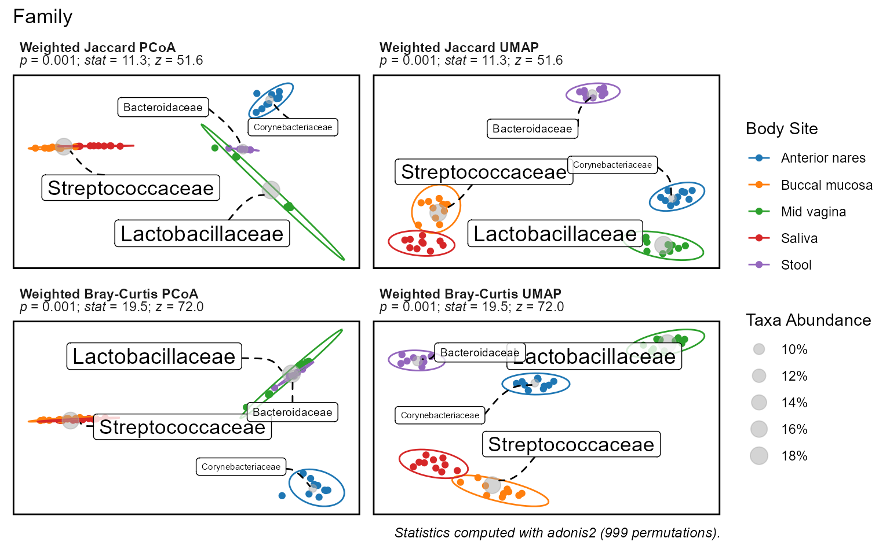
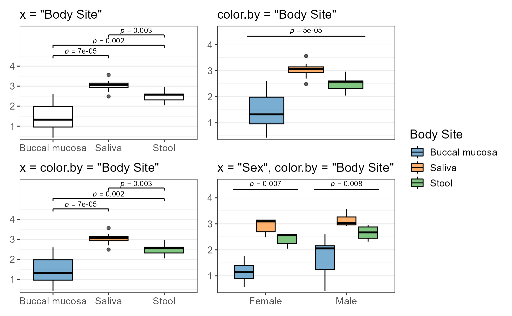

Introduction
Visualizations are one of the best ways to identify correlations in your dataset. If you can see a trend with your eyes, then you’re on the right track. Rbiom’s plotting functions are
adiv_boxplot()
|
bdiv_corrplot()
|
rare_barplot()
|
taxa_boxplot()
|
adiv_corrplot()
|
bdiv_heatmap()
|
rare_corrplot()
|
taxa_corrplot()
|
bdiv_boxplot()
|
bdiv_ord_plot()
|
taxa_barplot()
|
taxa_heatmap()
|
The *_boxplot(), *_corrplot(), and
bdiv_ord_plot() functions will automatically add p-values
to your figures whenever possible. The ggplot object they return has
$data, $code, $stats, and
$stats$code attributes you can use to automate, reproduce,
and customize your figures.
To generate statistics without creating a plot, use one of the following:
adiv_stats()
|
bdiv_stats()
|
distmat_stats()
|
taxa_stats()
|
Quick Start
Your metadata field of interest and microbiome property will determine which rbiom function to use.
|
Metadata Property |
Microbiome Property | ||
|---|---|---|---|
|
Alpha Diversity Shannon, Simpson |
Beta Diversity UniFrac, Jaccard |
Taxa Abundance Phylum, Genus |
|
|
Categorical Sex, Body Site |
adiv_boxplot()
|
bdiv_boxplot()bdiv_ord_plot()
|
taxa_boxplot()
|
|
Numeric Age, BMI |
adiv_corrplot()
|
bdiv_corrplot()
|
taxa_corrplot()
|
| Any |
adiv_stats()
|
bdiv_stats()
|
taxa_stats()
|
For instance, to explore the effect of Body Site (a categorical
metadata field) on Shannon Diversity (an alpha diversity metric), we’d
use adiv_boxplot() to produce a plot with statistics, or
adiv_stats() if we only want the stats.
Although all the functions have important differences, the statistical methods they employ can be grouped by the three plot types: ordination plot, box plot, and correlation plot.
Ordination Plots
Statistics for ordination plots are the most straight-forward. Set a
categorical metadata field to the color.by parameter to
test whether inter-sample distances are correlated with that
variable.
p <- bdiv_ord_plot(
biom = rarefy(hmp50),
color.by = "Body Site",
bdiv = c("Jaccard", "Bray-Curtis"),
ord = c("PCoA", "UMAP") )
p
p$stats
#> # Test: adonis2 ~ `Body Site`. 999 permutations.
#> # A tibble: 2 × 7
#> .weighted .bdiv .n .stat .z .p.val .adj.p
#> <lgl> <chr> <int> <dbl> <dbl> <dbl> <dbl>
#> 1 TRUE Jaccard 49 11.3 51.6 0.001 0.001
#> 2 TRUE Bray-Curtis 49 19.5 72.0 0.001 0.001
p$stats$code
#> iters <- list(weighted = TRUE, bdiv = c("Jaccard", "Bray-Curtis"))
#> dm_list <- blply(biom, NULL, bdiv_distmat, iters = iters, prefix = TRUE)
#> stats <- plyr::ldply(dm_list, function (dm) {
#> groups <- pull(biom, "Body Site")[attr(dm, 'Labels')]
#> set.seed(0)
#> ptest <- vegan::adonis2(formula = dm ~ groups, permutations = 999)
#> pstats <- summary(vegan::permustats(ptest))
#> with(pstats, data.frame(statistic, z, p))
#> })The plot subtitles have the summary statistics. Additionally,
p$stats contains a tibble data.frame with the full
statistics table, and p$stats$code shows the R commands for
reproducing the statistics outside of rbiom.
Note that the ordination statistics are not dependent on the ordination, only the distance metric. This is because the statistics are based on beta diversity distances which are computed prior to ordination.
By default, bdiv_ord_plot() applies the perMANOVA test.
You can change this to MRPP by specifying test="mrpp".
Details on the available tests are below.
| Test | Function | Method |
|---|---|---|
adonis2 |
vegan::adonis2() |
Permutational Multivariate Analysis of Variance (perMANOVA) |
mrpp |
vegan::mrpp() |
Multiple Response Permutation Procedure (MRPP) |
Box Plots
Statistics on box plots will automatically toggle between pairwise
and group-wise statistics based on the values of x and
color.by: x controls pairwise and
color.by controls group-wise. You can set x
and color.by to the same categorical metadata field to get
colored pairwise statistics, or set them to different categorical
metadata fields to get multiple group-wise statistics per plot.
biom <- rarefy(hmp50) %>%
subset(`Body Site` %in% c('Saliva', 'Stool', 'Buccal mucosa'))
p1 <- adiv_boxplot(biom, x = "Body Site")
p2 <- adiv_boxplot(biom, color.by = "Body Site")
p3 <- adiv_boxplot(biom, x = "Body Site", color.by = "Body Site")
p4 <- adiv_boxplot(biom, x = "Sex", color.by = "Body Site")
plots <- list(
p1 + ggplot2::labs(subtitle = 'x = "Body Site"'),
p2 + ggplot2::labs(subtitle = 'color.by = "Body Site"'),
p3 + ggplot2::labs(subtitle = 'x = color.by = "Body Site"'),
p4 + ggplot2::labs(subtitle = 'x = "Sex", color.by = "Body Site"')) %>%
lapply(`+`, ggplot2::labs(x = NULL, y = NULL, caption = NULL))
patchwork::wrap_plots(plots, guides = "collect")
Above, the two plots on the left are annotated with pairwise statistics while the two on the right have group-wise statistics. As with other plots, you can find the full statistics tables and reproducible R code in the plot attributes.
p1$stats
#> # Test: wilcox.test(.diversity ~ `Body Site`).
#> # A tibble: 3 × 8
#> `Body Site` .n .stat .estimate .lower .upper .p.val .adj.p
#> <fct> <dbl> <dbl> <dbl> <dbl> <dbl> <dbl> <dbl>
#> 1 Buccal mucosa - Saliva 20 1 -1.68 -2.19 -0.982 0.0000217 0.0000651
#> 2 Buccal mucosa - Stool 19 8 -1.16 -1.7 -0.447 0.00145 0.00217
#> 3 Saliva - Stool 19 80 0.526 0.186 0.824 0.00299 0.00299
p2$stats
#> # Test: kruskal.test(.diversity ~ `Body Site`).
#> # A tibble: 1 × 5
#> .n .stat .df .p.val .adj.p
#> <int> <dbl> <int> <dbl> <dbl>
#> 1 29 19.9 2 0.0000468 0.0000468
p2$stats$code
#> data <- adiv_table(biom)
#> stats <- stats::kruskal.test(.diversity ~ `Body Site`, data = data) %>%
#> with(data.frame(
#> .n = nrow(data),
#> .stat = statistic,
#> .df = parameter,
#> .p.val = p.value ))Internally, rbiom uses the non-parametric functions listed below.
| Test | Function | Method |
|---|---|---|
| pairwise | stats::wilcox.test() |
Two-sample Wilcoxon Rank Sum Test, aka Mann-Whitney Test |
| group-wise | stats::kruskal.test() |
Kruskal-Wallis Rank Sum Test |
Background
Normality
A normal distribution is visualized as a “bell curve”, where values further from the mean are observed less often. Microbial abundances do not follow this pattern; it’s common to observe high or low abundances more often than a “medium” abundance.
library(ggplot2)
patchwork::wrap_plots(
widths = c(1, 1.5),
ggplot() +
geom_histogram(aes(x=rnorm(1000)), bins = 10) +
ggtitle("Normal Distribution"),
ggplot(data = taxa_table(rarefy(hmp50), taxa = 4)) +
geom_histogram(aes(x=.abundance), bins = 10) +
facet_wrap(".taxa") +
ggtitle("Genera Abundance Distributions")
)
To compensate for this non-normality, rbiom uses the following non-parametric tests for categorical variables that are based on ranking or permutations.
| Test | Function | Used For |
|---|---|---|
| Wilcoxon Rank-Sum | stats::wilcox.test() |
Pairwise boxplot |
| Kruskal-Wallis Rank Sum | stats::kruskal.test() |
Groupwise boxplot |
| Permutational MANOVA | vegan::adonis2() |
bdiv_ord_plot() clusters |
For correlation/regression analysis, rbiom uses estimated marginal
means (emmeans::emmeans()) on rank-transformed values.
Further reading:
- Applied Multivariate Statistics in R: PERMANOVA, Comparison of Techniques
- R Applications — Part 1: Simple Linear Regression, particularly the section on assumption control.
Compositionality
Compositional data arises when the counts don’t represent the entire population. In microbiome studies, the number of microbes that get sequenced is far less than the number of microbes from where the sample was collected. Articles by Gloor et al and McMurdie and Holmes propose the use of their analysis tools ( ALDEx2 and metagenomeSeq, respectively) to apply the proper statistical methods for this situation. Conversely, rbiom does not correct for compositionality. This is because correcting for compositionality introduces extra noise into your dataset and severely limits your selection of metrics and visualizations, typically without any significant benefit to analysis.